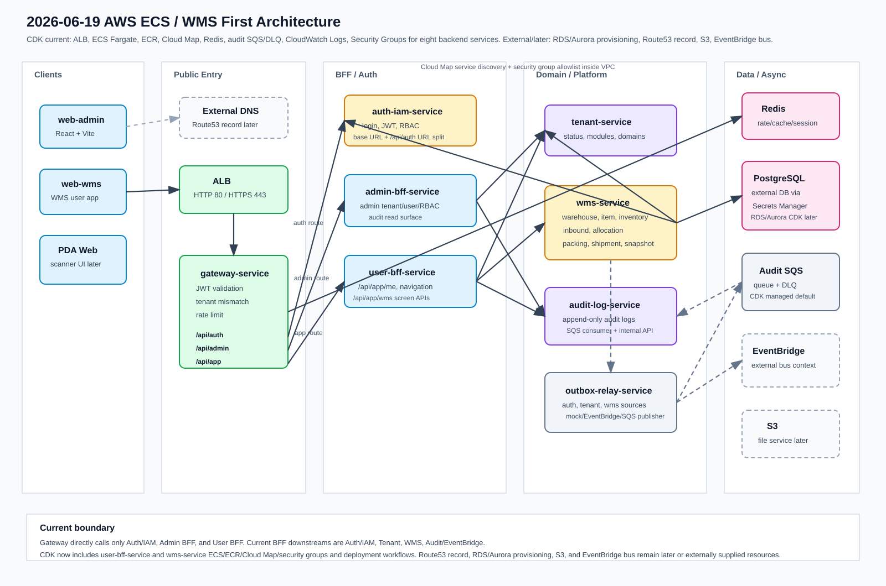

Infra · Architecture Snapshot
아키텍처/인프라 상태
2026-06-19 기준 AWS CDK와 GitHub Actions 배포 정의가 user-bff-service와 wms-service까지 포함하도록 확장되었습니다.
현재 CDK 관리 대상 backend service는 8개이며, gateway는 Auth/IAM, Admin BFF, User BFF만 직접 upstream으로 호출합니다.
오늘 변경 요약
| CDK 서비스 범위 | gateway-service, auth-iam-service, tenant-service, admin-bff-service, user-bff-service, wms-service, audit-log-service, outbox-relay-service를 같은 ECS/Fargate 스택에서 관리합니다. |
|---|---|
| Gateway upstream | /api/auth/**는 Auth/IAM API prefix, /api/admin/**은 Admin BFF, /api/app/**은 User BFF로 전달합니다. gateway는 tenant-service, wms-service, audit-log-service를 직접 호출하지 않습니다. |
| BFF downstream | Admin BFF는 Auth/IAM, tenant-service, audit-log-service를 호출합니다. User BFF는 Auth/IAM, tenant-service, wms-service, app audit용 EventBridge 또는 audit-log-service fallback을 호출합니다. |
| Auth URL split | Gateway/User BFF는 AUTH_IAM_API_SERVICE_URL 또는 .../api/auth prefix를 사용하고, Admin BFF/WMS는 AUTH_IAM_SERVICE_URL base URL을 사용합니다. |
| WMS 배포 | wms-service는 ECS/ECR/Cloud Map/security group, PostgreSQL DATABASE_URL secret, WMS internal auth secret, Auth/Tenant internal auth secret을 CDK context로 받습니다. |
| User BFF 배포 | user-bff-service는 ECS/ECR/Cloud Map/security group과 Auth/Tenant/WMS/Audit internal auth secret을 CDK context로 받으며 gateway USER_BFF_SERVICE_URL에 연결됩니다. WMS 화면 조회 API를 위해 WMS_SERVICE_URL, WMS_INTERNAL_AUTH_SECRET, User BFF → WMS SG ingress가 포함됩니다. |
| Outbox/Audit | outbox-relay-service는 auth-iam, tenant, wms source를 지원하고, 기본 SQS publisher 대상은 CDK 관리형 audit event queue입니다. audit-log-service는 Admin/User BFF 내부 API와 SQS consumer를 모두 허용합니다. |
구조도

CDK 포함 범위
ALB, ECS Cluster, ECS Fargate service/task definition, ECR repository, Cloud Map, service security group, CloudWatch log group, ElastiCache Redis, audit event SQS queue/DLQ.
Auth/IAM, tenant, WMS, audit-log DB URL, source별 outbox DB URL, service-to-service internal auth secret, JWT secret 또는 key pair ARN은 기존 Secrets Manager secret을 참조합니다.
Route53 record, RDS/Aurora 생성, S3, EventBridge bus 생성, CloudFront, OpenSearch, MSK는 아직 CDK 스택 밖입니다. 필요한 경우 context로 외부 URL/ARN/name을 연결합니다.
배포 workflow
| 서비스별 workflow | deploy-gateway-service.yml, deploy-auth-iam-service.yml, deploy-tenant-service.yml, deploy-admin-bff-service.yml, deploy-user-bff-service.yml, deploy-wms-service.yml, deploy-audit-log-service.yml, deploy-outbox-relay-service.yml. |
|---|---|
| 공유 스택 보호 | 서비스별 workflow는 같은 CDK stack을 갱신하므로 target이 아닌 서비스의 desired count와 image tag를 필수 입력으로 검증합니다. 암묵적 0 또는 latest 덮어쓰기는 허용하지 않습니다. |
| base infra phase | target 서비스 이미지를 push하기 전에 해당 target desired count를 0으로 둔 base infra 배포를 수행해 ECR repository와 ECS 리소스를 먼저 만듭니다. |
| final deploy phase | 이미지를 ECR에 push한 뒤 target image tag와 desired count를 실제 값으로 넣어 같은 stack을 다시 배포합니다. |
| outbox helper | .github/workflows/scripts/outbox-cdk-context.sh도 user-bff audit과 wms/outbox context, secret override를 포함합니다. |
검증 기준
pnpm --filter @multi-tenant/infra-cdk typecheck
pnpm --filter user-bff-service typecheck
pnpm --filter wms-service typecheck
pnpm --filter @multi-tenant/infra-cdk exec cdk synth이 문서는 실제 AWS 계정 배포 결과가 아니라 repository의 CDK/workflow 코드 기준 스냅샷입니다. AWS 배포 후에는 CloudFormation output, ECS desired/running count, target health, SQS queue attributes, service log group을 증적으로 추가해야 합니다.